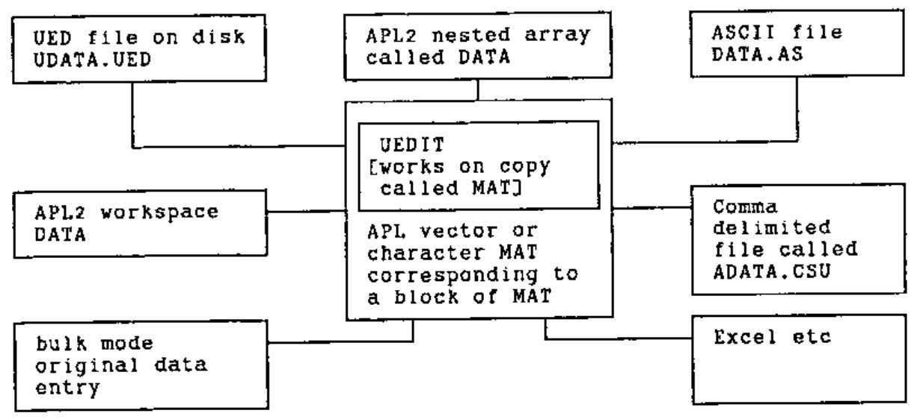

The 3rd APL Statistics Library Conference Held at Gregynog 30 September to 2 October 1991
Vector 8:3, page 35
Transcribed from the printed issue; not yet reviewed. Read it in the PDF of the issue, page 35
Twenty people assembled in the second seminar room on Monday 30 September.
Opening Session¶
Alan Sykes opened the conference by going through a frank ‘state of the project’ letter from Tony O’Hagan (this was printed in full in the last issue of Vector). Alan Sykes then led a discussion on the current status of ASL, and the plans for future distribution. The statistics textbook to go with ASL is being worked on by Alan Mayer and he has done three chapters and two half chapters so far.
In a discussion on how ASL ought to be advertised and distributed, Alan Sykes wished to see it given away free to APL Association Members. Norman Thomson’s view was that any income required should be obtained by publication of books rather than delivery of software. Nobody disagreed with Alan Sykes when he urged that we must release the work soon.
Testing ASL across Interpreters¶
In the first of the presentations, Maurice Jordan reviewed his work on the automatic testing of APL software. (for details, see his paper ‘CATS: Computer Aided Testing of APL Software’ given at APL91). Maurice said that his test bed had been improved by its use on the bottom shelf. He showed us a page (of three) with results from a function which contained only one executed line. The function was specified to produce a scalar result from two numeric non-negative vectors of matching shapes. As well as testing the function with defined pre- and post-conditions, CATS explores mutations on the test data to see if edge conditions will show errors or additional functionality.
Maurice also discussed areas of arithmetical difference between APL interpreters, for example the ? random number generator. One cause of such differences is, of course, the variation between the C compilers for the target machines. Differences between implementations are many; all use different methods for error trapping and, surprisingly, all flip to exponential notation at slightly different points. Norman Thomson felt that the ASL project ought to conserve effort and test and prove algorithms rather than implementations.
Utility Functions for ASL¶
David Eastwood said the utility software that would seem to be needed for ASL as it now exists doesn’t match our original ideas; probably because our original ideas were wrong. We had expected to have to organise ways to bring functions to do what we wanted into the current workspace because the volume of ASL functions would be too great to )COPY complete workspaces into the current workspace, and also because there would be several variants of most ASL functions.
At present the three volumes, Basic Statistics, Basic Graphics and Regression have not led to severe problems through the space they occupy [but Karen Hurrell later said she had problems with both workspaces and symbol tables]. We need to think again about distribution systems and to know more about the target user so that we can suit the distribution system and other utilities to his needs. David thinks we diverged too early onto several platforms. We ought to get each volume working and fully tested on one platform and only then port and test the porting to other platforms.
There are problems porting between platforms because the workspace interchange standard specified by ISO is not fully implemented by any manufacturer. The IBM )IN and )OUT are useful for transfer between various versions of APL2. APL*PLUS/PC provides IBMINOUT and APL*PLUS II has SLT (Source Level Transfer). Dyalog can import from APL2/PC and APL*PLUS/PC. Peter Lewis said he has software to go from APL*PLUS/PC to APL2/PC. Anthony Camacho said he had received some software from Dick Holt for workspace transfer between various implementations including Sharp APL/PC and I-APL, but had not yet investigated it.
David Eastwood suggested we collect WS transfer software but reiterated that there is no point in converting before completion of the testing and he listed the steps in testing and porting to emphasise that it is not a trivial task. Peter Fisk said that some other statistics programs had sets of data with the correct results for retesting.
David said that although we now saw fewer problems with selecting functions from ASL for use, we still need library management utilities. Users will benefit from simple ways to identify alternative versions of functions and when a non-default version is selected then they will welcome a utility to amend all the calls so that they use the selected version instead of the default. We also need development tools and David recommended we look at public domain sources, such as the Toronto SigAPL Toolkit which contains lister, cross-referencer, renamer, comment extractor and checker of localisations - to name but a few. David pointed out that the benefit of using this sort of code is that it is written in ISO APL and can be used in most dialects.
Bottom Shelf Specification¶
Norman Thomson distributed a revised specification of 63 pages all written using mainframe APL2. Norman feels, although some see a theoretical advantage in staying with ISO APL, that the advantages of APL2 are overwhelming; that it is very well in tune with the things that we want to do in ASL; that we aren’t exploiting it properly. He then went through some of the significant changes introduced in the new specification document. Norman wants one version to be the master specification and to write it in mainframe APL2. Norman discussed in some detail his suggestions for argument naming conventions; these are fully documented in the draft ASL Standards, later in this Random Vector.
UEDIT¶
In his introduction, Alan Sykes remarked that we were very lucky to be able to welcome Peter Lewis of the Department of OR in the Naval Postgraduate School at Monterey, California. Peter put up a slide of the structure of UEDIT, which is a Universal Editor and spreadsheet with many statistical functions built in.

Peter told us that UEDIT originated as 70 pages of APL code written by one of his students and has been improved over the years. He then demonstrated it using a spreadsheet of 177 rows and 11 columns. The codes for manufacturer name and description of deliverable item were converted into descriptive character vectors.
The spreadsheet offers many menus and actions, including most of the standard statistical analyses. At any time the user may enter any APL command. The spreadsheet is held as a nested matrix MAT and also in its original form as DATA, so MAT can be amended, used for calculations and printed without affecting the original data, which is still available for use in APL expressions. Amendment is simply done by moving the cursor to the field and typing over its previous contents. Entries are validated so character entries in numeric fields are trapped and give rise to a warning. The demonstration convinced us that UEDIT served all the needs of a spreadsheet and general matrix editor with a very broad choice of statistical analyses and particularly powerful methods for importing and exporting data from and to other systems. UEDIT is written in APL232/PC. Asked about speed Peter said if it doesn’t go fast enough or hold a large enough spreadsheet “Buy a faster, larger computer.”; he had found a 16Mbyte 80486 more than adequate for anything he had tried.
A Time Series Volume for ASL¶
Alan Hawkes listed
-
some material already available; NAG, Genstat, S, IP Sharp workspaces, StatGraphics, Best (a Norwegian package written in MIPS APL), BATS (Bayesian Analysis of Time Series - copyright Neville Davis, Nottingham) and
-
some sources of help and further material; A G Hawkes, Clive Taylor, FinnAPL, Andy Pole (now at Duke University), plus maybe the authors of the above packages.
Peter Lewis said that S is unusable on large data sets: APL is much faster. Alan suggested the following contents for the Time Series volume, not necessarily in this order:
- Univariate TS, containing
- Non-parametric Estimation - ACF, PACF
- Modelling - ARIMA: Autoregressive Integrated Moving Average, Theoretical Functions, Fitting, Testing, Forecasting
- Simulation
- Seasonal Models - Holt Winters, X-11
- Utilities - Fast Fourier Transforms, Filtering
- Advanced - Bootstrapping, Cross-validation
- Multivariate TS
- State space models
- Non-linear models
- Non-stationary TS
- Econometrics
- SASE (point processes) [Statistical Analysis of Series of Events]
Peter Lewis has already written up SASE so perhaps it should be chapter 2. Alan Hawkes then offered some thoughts on the best way to get the job done. He suggested the syntax should be designed and prepared as functions containing nothing but comments, and when agreed then coding could begin. Peter Lewis said that SASE began as Fortran and was rewritten in APL. The graphics from StatGraphics has been separated out and sold as APLOT, but his students dislike it and prefer GraphStat (the APL front end to GDDM). Norman Thomson likes the principle of recording a graph as two elements: the graph specification and the data.
Jake Ansell said that John Chambers emphasised linking to non-APL code, but that he was not sure of its desirability. Norman Thomson said that NAG would always be bigger than ASL and that if ASL could link to NAG then we could offer the advantages of APL on data manipulation as an addition to those of NAG. Norman has obtained the professional Fortran version of NAG and is trying to link APL2/PC to it but has found that it would have been easier and more valuable if he had obtained the newer Fortran II version. There was a short discussion of sources of FFT algorithms and code. Peter Fisk wondered whether NAG could be an agent for the distribution of ASL and Norman Thomson thought it could. Jake Ansell didn’t want to make NAG necessary to ASL users. Peter Lewis suggested that we collect utilities for linking and gave his opinion that the best source for Time Series algorithms was a book called Time Series Analysis published by Brooks Cole but the name of the author (who comes from Texas) he was temporarily unable to recall.
Alan Sykes said that we need three or four people to work on sections of chapter one: when the specification is agreed then perhaps some of the coding could be done as student exercises. It was suggested that John Pemberton could be asked to help.
Postscript: A third year project is under way at Swansea, with supervision by A G Hawkes and J Pemberton.
A Non-linear Regression Modelling Volume¶
Peter Hingley circulated five pages of functions and test results and showed an example which could not be modelled as a polynomial (it plotted the response against the concentration of a drug dose). Because each point plotted was part of the data for plotting the next point the algorithms were inherently looping and this made them slow. With TryAPL2 he had processed 500 data points in 45 minutes, but he wanted to be able to handle 5000 or even 20,000 data points. He concluded by asking whether this would be an appropriate item for the regression shelf; those present clearly thought so.
Non-Parametric Methods¶
Karen Hurrell discussed topics in non-parametric statistics including density estimation and smoothing (non-parametric regression). Tony O’Hagan later expressed interest in a volume on this topic.
I-APL/Mac and ASL¶
Ian Clark began by asking ‘Why on earth use I-APL as it is slow and of limited capacity?’ He answered the question by saying I-APL is free, runs on many machines and offers a suitable basis for classwork, which, being ISO-conforming, could become a textbook. Ian sees himself as a Human Factors consultant and gave us some insight into how he had gone about analysing the tasks involved in producing workspaces on I-APL/Mac and then designed the interface to make common tasks easier. Doing a task analysis is often long-winded and tedious because, to spot the interesting places where good human factors design could make a significant difference to ease of use, one had to do a very detailed analysis where most of the steps almost seemed too trivial to merit recording. Indeed his first examples led to some jocular comments such as that he had omitted to include the task ‘fetch student’.
As an example of a task made easier he explained how a script could be typed on a word processor with embedded APL expressions. The user could display this on the screen and read it, double click on an APL expression to copy it into the entry line, edit it there if required, and then enter it to see the effect. As the results would be displayed at the end of the session, after the end of the script and hence force the session to scroll to the end, it could easily have been tedious to get back to one’s place to continue reading, but at that point Ian Clark arranged that the keypad uparrow would return you to your place and the downarrow would then scroll to highlight the next executable expression.
A Contingency Tables Volume¶
Alan Mayer showed us some of the work he had done in his workspace ASLTAB. He suggested that a volume on contingency tables should begin by including a list of 2×2 measures, a list of R×C measures and a list of ordinal data. There is also a need to extract data, perhaps from surveys. For example to obtain a count of the items (rows) in which column 18 contains a 1, an APLer could enter +/RAWDATA[;18]=1; he provided the function HOWMANY so that non-APLers could enter RAWDATA HOWMANY 18 1 to obtain the same result. Another function is TABULATE. If the data is SURVEY and has two values in column 1, two values in column 2 and four values in column 18 then the expression:
This has two tables corresponding to the two values in column 1; each table has two rows corresponding to the two values in column 2; each table has four columns corresponding to the four values in column 18. Where the survey has four values and we are interested in picking out one to distinguish from all others, Alan has the function DICHOTOMISE whose arguments specify the value(s) to pick out. Another common need is to classify entries into ranges: for example in a vector of student heights, where:
… the heights could be classified into the ranges: up to 160, 160 to 170, 170 to 180 and over 180 by:
The result would be the shape of HEIGHT and would have five values 0-4 according to the range each height fell into. Similarly the function ORDNAL [sic] calculates concordancy values.
A Reliability Volume¶
Jake Ansell pointed out that reliability overlapped Quality Assurance, Multivariate Analysis, Time Series, Medical Statistics and even Regression (through Fault Tree Analysis). Reliability includes Stochastic Processes and Data Analysis. Jake’s outline of Data Analysis was like this:
-
Elementary Analysis - mostly bottom shelf items:
- index of dispersion
- hazard plots
- TTT plots
-
Distributions
- univariate
- exponential
- Weibull
- extreme value, etc.
- censoring [Norman objected that censoring was part of the data]
- truncation
-
Covariate Analysis - much in common with the Regression volume
- Weibull regression
- PHM
- ALT [Accelerated Life Testing]
-
Repairable Systems
- trend tests
- growth models
- dependency analysis
Sample Surveys¶
Allan Prys-Williams made some ad hoc suggestions. He asked what we wanted in the way of:
-
Simple auxiliary functions
- construction labels
- drawing samples whose size is proportional to their probability
-
Sample drawing
- stratified unweighted or weighted according to sub-population size
- clusters - either one size at each level; N each of M of K
-
Costs of interviews
- can be an auxiliary variable X with or without a known population
An Application of ASL¶
Maurice Jordan reported that at the end of the football season the Observer tabulated all combinations of home and away scores with the frequency of each, for the First Division and the Second Division as two tables. Maurice discovered that the scores were a Poisson distribution. For the First Division chi² is 0.5; for the Second Division there were a few too many no-score draws for a good match.
Maurice said “Given a computer and a good set of statistical functions you begin to think about problems differently” and proceeded to give some fascinating examples of odd places where Poisson distributions appear and the ability to analyse them can be valuable. To win money on the pools one must forecast unlikely results. When the favourite wins, the odds are too low to make much profit.
Documentation¶
David Eastwood chaired a discussion on documentation. Jake began by surveying what we had so far. For the Basic Statistics each function has a corresponding HOW function - a basic minimum. Alongside that there is Norman’s specification. For the Graphics there is Tony O’Hagan’s user guide which explains how the language was drawn up and gives implementation notes. For the Regression volume Alan Sykes has produced an introduction to the statistics covered, the data required, how the functions work and some guidance on adding your own functions. There is also a nice crib sheet to say what the functions actually do. In Jake’s view this would be a good standard to aim for all subsequent volumes.
Alan Hawkes suspects that the Basic Statistics, being a pot-pourri of bits and pieces, might not get more than its current fragmentary documentation. Jake Ansell said that it needs at least an introduction. Alan Prys-Williams suggested that volumes might shadow a dominant textbook and thus the textbook could become the explanatory part of the documentation. Function and variable names would have to match the usages in the book. Sometimes it would be necessary to give a result a name other than Z.
Alan Sykes felt that the WAGS and Regression documents are almost publishable. Norman Thomson suggested that we look at the problem the way a publisher would look at preparation of a series; he would employ a commissioning editor who would write a specification which all authors would be asked to follow. At the lower level he wanted to ensure that items capable of being calculated in varying ways should be made consistent. Whenever a mean is used it should be exactly the same.
There was some discussion about the use of enhanced features. On the whole the coding tried to stick to ISO APL but we had accepted some second generation phrases. The Regression volume was entirely written in ISO APL, and the Basic Statistics in its APL*PLUS version was also ISO. WAGS was only fully implemented in Dyalog and did use some advanced features.
Anthony Camacho recommended Gary Bergquist’s book “Advanced Techniques and Utilities” where the functions often had alternative commented out lines for other interpreters so that to change from IBM to Sharp to STSC all one would have to do is insert and delete the comments indicated. Peter Lewis remarked that Gary was also author of the Zark APL Tutor which he recommended and which his students had found useful, instructive and amusing. It was reviewed in Vector 7.4. Maurice Jordan had once begun work on a system which would search for all primitive usage which could be ambiguous and replaced each use with a cover function. Then by simply substituting the APL2 cover functions for the APL*PLUS cover functions, the whole workspace could be painlessly adapted to run on APL2. He thought that he had never finished the job but would try to find it to see whether it could be useful for ASL. David Eastwood thought that the least we should do was to provide notes warning all concerned about the known trouble areas when converting from one implementation to another (see the ASL draft Standards).
Norman Thomson said that he had begun to question our decision to keep the bottom shelf at a suitable level for a first year undergraduate course. Many simple and basic things would not fall into this definition and he recommended that we extend it a bit. For example weighted least squares would be a good addition. Jake disagreed; the criterion we had chosen would be understood by more people than any other we had been able to think of. He also thought that weighted least squares should be Regression.
Group Sessions¶
David Eastwood chaired a discussion which led to the conference breaking into two streams for the two sessions before the final plenary. One stream, with the computer and display equipment, would see a demonstration of WAGS in the first session and Maurice Jordan demonstrating partition techniques in the second (this was included because these techniques make it easy to do things in ISO APL which look as if they would be easy only with nested arrays); the other would review standards and documentation in the first session and discuss porting problems and techniques in the second.
During the discussion Norman Thomson wanted to exclude data input and output on the grounds that: (a) it isn’t statistics; (b) it is very system-dependent and (c) it is something that every vendor and software house claims to be expert on. Alan Mayer felt that we shouldn’t turn our backs on the possibility of taking data from Lotus or returning results to it.
Partitioning Techniques¶
Maurice Jordan said that Bob Smith, the implementer of STSC’s NARS had worked on partitioned functions in the 1970s. These were probably the basis of partitioned enclose and they certainly enable one to operate on simple arrays in ISO APL as if they were nested. The breaks between nests are marked in a boolean variable which is otherwise all zeros, by a 1 at the beginning of each partition - in Dyalog thus:
Using the partitioned technique the equivalent is:
and the result from this is much faster than using nested arrays.
Anthony Camacho asked where these functions were available and when he was told that they were the workspace PARTFNS in WSLIB 6 in Sharp APL he realised that I-APL has the PARTFNS workspace, improved and generalised by David Ziemann and issued on every I-APL disk. This was established on Alan Mayer’s portable computer and Alan thought that it would be a good subject for an article in Education Vector.
Closing Decisions and Actions¶
David Eastwood said the regression volume is closest to a model set of documentation that we have. Probably the Basic Statistics will be documented to a different standard and he suggested that an introduction to precede Norman Thomson’s specification would be a minimum.
It was now agreed that we would not bar the use of enhancements in implementations on second generation interpreters, although we still preferred to avoid them. We do need to warn people about problems moving from one interpreter to another and he suggested that we collect these. Anthony Camacho said that Adrian Smith had spoken at APL 91 about writing in a common subset of the major interpreters; he would probably be able to provide a set of rules to follow to write functions which would run unchanged in all of them. Alan Sykes mentioned that it was necessary to take care that a nested vector containing a singleton such as in 'Alan 'M' 'Sykes' was a vector of vectors: if the singleton was a scalar the function would fail because the level of nesting would become inconsistent. A simple doubly delimited character vector provided a robust solution.
David Eastwood undertook to circulate a first draft of a paper about avoidance of problems when writing for multiple interpreters (see this issue of Random Vector). The following people agreed to be the collection points for various types of material:
| Alan Mayer | Regression |
| David Eastwood | Utilities |
| Alan Hawkes | Time Series |
| Alan Mayer | Contingency Tables |
| Alan Sykes | Multivariate Statistics |
| Jake Ansell | Reliability |
| Allan Prys-Williams | Sample Surveys |
| Karen Hurrell | Smoothing and density estimation |
Norman asked for the quality of the quantile tails specification functions to be reviewed. David Eastwood agreed to write an introduction to the specifications.
It was agreed that we had not yet solved the problem of maintaining consistency between versions of functions which might appear in more than one volume; it was agreed that this could happen - we were not going to try to ensure that each function appeared in only a single place. It was thought a good idea to date each function and also to provide a comment indicating where it came from in the library - this would enable anyone to check that they were using the latest version.
Jake Ansell agreed to act both as Chairman of the team and Manager, with Alan Sykes as his deputy who would probably take over when/if needed. The other members of the team are Alan Mayer, David Eastwood and John Searle. Alan Sykes asked that we call the three volumes by their correct names from now on. They are ASLBSTAT for basic statistics, ASLGRAPH for the graphics (N.B. not WAGS) and ASLGREG for the general regression volume.
It was agreed that an advertisement and order form for ASLGREG should go in the next Random Vector. Alan Mayer will proof read the documentations and Alan Sykes will make 60 copies and await orders. ASLGRAPH needs the documentation changing to take out the references to Dyalog. Then the STSC version can be completed and it and the Dyalog version are almost ready. That leaves the ports to APL2 and APL.68000. It was agreed that when we issue the basic statistics we will include with it an advertisement for the other volumes on the bottom shelf. Ian Clark said he would try to put the basic statistics into I-APL/Mac.
The concept of patrons for sections of the project was discussed. It was felt that it would be helpful to approach leading APL statisticians and to ask them if they would be willing to become patrons of the ASL project; an honorary position primarily designed to formalise their support for the project.